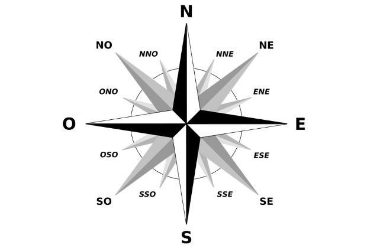

Pontos Cardeais:
Norte (N)
Sul (S)
Leste (E)
Oeste (O)
Pontos Colaterais:
Nordeste(NE)
Noroeste(NO)
Sudeste(SE)
Sudoeste(SO)
Pontos Subcolaterais:
Norte - Nordeste(NNE)
Leste - Nordeste(ENE)
Leste - Sudeste(ESE)
Sul - Sudeste(SSE)
Sul - Sudoeste(SSO)
Oeste - Sudoeste(OSO)
Oeste - Noroeste(ONO)
Norte - Noroeste(NNO)